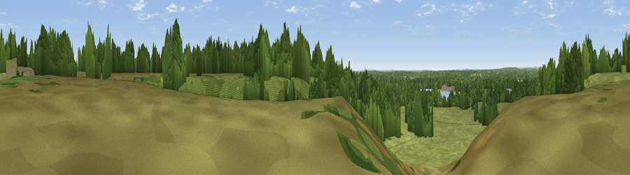

Bigsburn Hill
#32815 in England · top 42% of its area beats it · near PoulnerThe view, rendered

A 360° render of this exact spot computed from the terrain model, tree cover and land cover — summer colours, afternoon light, calibrated against photographs of famous viewpoints. Real trees, hedges and buildings will differ in detail.
The panorama
Grey silhouette: terrain skyline in each direction (720 bearings, Earth curvature and refraction included). Dashed green: skyline with trees (+15 m) and buildings (+8 m) as obstacles. Blue strip: how far the ground is visible on each bearing.
Where the view opens
Wedge length = distance to the farthest visible ground on that bearing (vegetation-aware). Rings at 10, 25 and 50 km.
What fills the view
53% woodland · 39% grassland · 6% water · 2% built-up ·
Angular shares of the visible panorama (visual magnitude), not map area. Landscape diversity 0.43 (0–1 Shannon).
Key numbers
More beautiful places nearby
The staircase of upgrades: each row has a higher view potential than everything closer. Driving times are estimates from straight-line distance, calibrated against real road routing — check an actual route before setting out.
| Place | Direction | Drive | Score |
|---|---|---|---|
| Viewpoint near Ibsley | NNW · 1 km | ~3 min | 42.4 |
| Viewpoint near Hightown | SSE · 4 km | ~9 min | 43.3 |
| Viewpoint near Hurn | SSW · 12 km | ~22 min | 53.7 |
| Chalbury Hill | W · 15 km | ~27 min | 56.5 |
| Viewpoint near Martin | NW · 15 km | ~28 min | 64.6 |
| Viewpoint near Cranborne | NW · 16 km | ~28 min | 65.0 |
| Trow Down | NW · 24 km | ~39 min | 67.5 |
| Monk's Down | WNW · 27 km | ~43 min | 74.4 |
50.86924, -1.76506 · source: osm peak · position refined by local search. Computed location — check access rights before visiting.